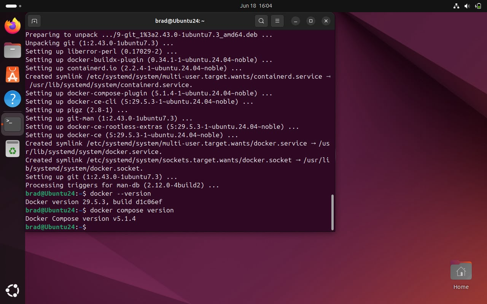
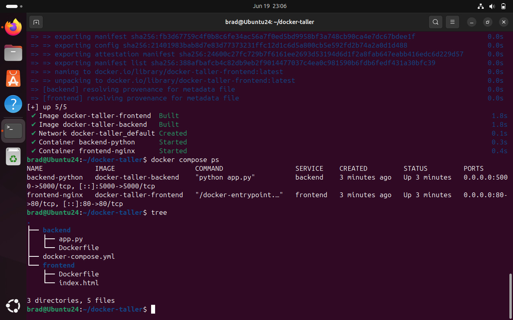

Este proyecto integra la configuración de entornos virtuales, contenedores desacoplados
y orquestación con Kubernetes para desplegar una infraestructura robusta y escalable.
VM GráficaUbuntu 24.04
VM ConsolaDebian 13.5
Imagen baseubuntu:24.04
OrquestaciónMinikube
Nuestro equipo — Grupo 1
DA
Duber Alvarez Ruiz
Cód. 2260403
Virtualización
MJ
Maria Jael Barrera Gómez
Cód. 2369181
Documentación + Sitio Web
GC
Gustavo Adolfo Chilito
Cód. 2266901
Documentación + Sitio Web
BS
Bradley Suescun Ramírez
Cód. 2478054
Docker + Kubernetes
Ubuntu 24.04 LTS (Gráfica)
Debian 13.5 (Consola)
Componente 1: Virtualización
Instalación y configuración de dos nodos independientes con aislamiento de red,
particionamiento manual y acceso seguro vía SSH entre ambas máquinas virtuales.
ip a — Ver interfaces de red y direcciones IP
lsblk — Ver estructura de particiones
ssh usuario@ip_vm_consola — Conexión SSH entre VMs
Evidencias
Configuración inicialParticionamiento final
Componente 2: Contenedores Docker
Orquestación de microservicios desacoplados (Nginx + Python) usando Docker Compose y volúmenes persistentes.
FrontendNginx sirviendo HTML estático en el puerto 80
BackendAPI HTTP en Python en el puerto 5000
docker compose up -d — Levantar servicios
docker ps — Ver contenedores activos
curl http://localhost:5000 — Probar backend
Evidencias

Versión de Docker instalada

Docker compose up — estado y estructura
Componente 3: Kubernetes
Despliegue escalable en Minikube con servicios NodePort y alta disponibilidad mediante réplicas.
ℹ️ Archivo "Diagrama" sin extensión visible
En la carpeta también hay un archivo llamado solo Diagrama (sin .png/.jpg visible) — probablemente es el archivo fuente editable (ej. draw.io) y no una imagen para mostrar en la web. Si sí es una imagen, dime su extensión exacta y la agrego.
Conclusiones
Aprendizaje
La orquestación con Kubernetes permite una gestión de fallos automática inalcanzable con contenedores individuales.
Dificultad
El mapeo de puertos entre el host físico y el clúster de Minikube requirió ajustes en las reglas de firewall.
Recomendación
Implementar un pipeline de CI/CD para automatizar las actualizaciones del frontend.